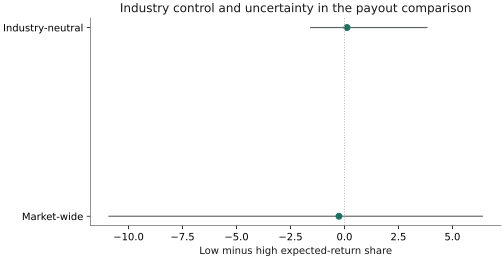

Research review · Aggregate derived results
Sector ER Tracker
Does the payout association persist within industries?
Cash-dividend implementation. These estimates use split-adjusted cash-dividend events, annual stock formation and established dividend payers. Independent data checks are linked below. Remaining differences in history and accounting timing mean the stock-level rebuild is not an exact reproduction of the authors' upstream portfolios.
Monthly stocks through 2026-09; complete annual outcomes through 2025. Current revised source snapshot: 2026-11-17. French 12 SIC industries are not GICS sectors.
Read the complete generated report · Inspect data-validation gates
Payout comparisons on the same years
Low minus high is a difference in decomposition shares, not a return spread. Industry-neutral portfolios use the same equal weights across all 12 industries on both sides. Intervals use paired stationary-block draws across all four portfolios.
| industry id | comparison | n obs | start | end | low ER | high ER | low minus high ER | lower | upper |
|---|---|---|---|---|---|---|---|---|---|
| 0 | Industry-neutral | 31 | 1973 | 2025 | 0.513 | 0.396 | 0.117 | -1.567 | 3.816 |
| -1 | Market-wide | 31 | 1973 | 2025 | 0.176 | 0.431 | -0.255 | -10.905 | 6.385 |

Industry estimates
ER and EDG are model-dependent contributions to variation in log dividend-price ratios. They are not forecasts or R-squared values. Values outside [0, 1] are retained. Wide intervals and instability flags argue against ranking industries.
20-year annual window ending 2025
| industry name | portfolio | window start | window end | n obs | ER | ER lower | ER upper | EDG | EDG lower | EDG upper | denominator | quality flags |
|---|---|---|---|---|---|---|---|---|---|---|---|---|
| NoDur | All | 2006 | 2025 | 20 | 0.553 | 0.034 | 0.772 | 0.446 | 0.227 | 0.964 | 0.636 | cash_dividends;annual_formation;revised_accounting |
| Durbl | All | 2006 | 2025 | 20 | 0.416 | 0.338 | 0.842 | 0.583 | 0.159 | 0.661 | 0.906 | cash_dividends;annual_formation;revised_accounting |
| Manuf | All | 2006 | 2025 | 20 | 0.493 | 0.357 | 1.320 | 0.506 | -0.324 | 0.641 | 0.578 | cash_dividends;annual_formation;revised_accounting |
| Enrgy | All | 2006 | 2025 | 20 | 0.606 | -0.214 | 0.930 | 0.398 | 0.070 | 1.229 | 0.273 | cash_dividends;annual_formation;revised_accounting |
| Chems | All | 2006 | 2025 | 20 | 1.029 | 0.804 | 1.511 | -0.031 | -0.519 | 0.197 | 0.430 | cash_dividends;annual_formation;revised_accounting |
| BusEq | All | — | — | 18 | — | — | — | — | — | — | — | insufficient_observations |
| Telcm | All | 2006 | 2025 | 20 | 0.613 | 0.466 | 1.235 | 0.384 | -0.235 | 0.532 | 0.650 | cash_dividends;annual_formation;revised_accounting |
| Utils | All | 2006 | 2025 | 20 | 0.917 | 0.791 | 1.088 | 0.083 | -0.088 | 0.208 | 0.608 | cash_dividends;annual_formation;revised_accounting |
| Shops | All | 2006 | 2025 | 20 | 0.807 | 0.680 | 2.116 | 0.191 | -1.123 | 0.320 | 0.451 | cash_dividends;annual_formation;revised_accounting |
| Hlth | All | 2006 | 2025 | 20 | 0.579 | 0.259 | 1.718 | 0.423 | -0.690 | 0.743 | 0.318 | cash_dividends;annual_formation;revised_accounting |
| Money | All | 2006 | 2025 | 20 | -0.098 | -0.900 | 2.823 | 1.102 | -1.896 | 1.939 | 0.734 | cash_dividends;annual_formation;revised_accounting |
| Other | All | 2006 | 2025 | 20 | 0.404 | 0.254 | 0.761 | 0.597 | 0.241 | 0.745 | 0.429 | cash_dividends;annual_formation;revised_accounting |
30-year annual window ending 2025
| industry name | portfolio | window start | window end | n obs | ER | ER lower | ER upper | EDG | EDG lower | EDG upper | denominator | quality flags |
|---|---|---|---|---|---|---|---|---|---|---|---|---|
| NoDur | All | 1996 | 2025 | 30 | 0.692 | 0.250 | 0.970 | 0.305 | 0.033 | 0.745 | 0.249 | cash_dividends;annual_formation;revised_accounting |
| Durbl | All | 1996 | 2025 | 30 | 0.396 | 0.119 | 0.693 | 0.604 | 0.307 | 0.883 | 0.588 | cash_dividends;annual_formation;revised_accounting |
| Manuf | All | 1996 | 2025 | 30 | 0.550 | 0.357 | 1.025 | 0.450 | -0.027 | 0.641 | 0.470 | cash_dividends;annual_formation;revised_accounting |
| Enrgy | All | 1996 | 2025 | 30 | 0.669 | -0.033 | 0.966 | 0.336 | 0.034 | 1.052 | 0.271 | cash_dividends;annual_formation;revised_accounting |
| Chems | All | 1996 | 2025 | 30 | 1.041 | 0.818 | 1.300 | -0.041 | -0.300 | 0.181 | 0.414 | cash_dividends;annual_formation;revised_accounting |
| BusEq | All | 1996 | 2025 | 28 | 1.125 | 0.536 | 1.803 | -0.122 | -0.802 | 0.460 | 0.150 | cash_dividends;annual_formation;revised_accounting |
| Telcm | All | 1996 | 2025 | 30 | 0.763 | 0.053 | 1.109 | 0.222 | -0.117 | 0.872 | 0.218 | cash_dividends;annual_formation;revised_accounting |
| Utils | All | 1996 | 2025 | 30 | 0.701 | 0.549 | 0.990 | 0.300 | 0.010 | 0.451 | 0.525 | cash_dividends;annual_formation;revised_accounting |
| Shops | All | 1996 | 2025 | 30 | 1.225 | 0.488 | 2.520 | -0.236 | -1.552 | 0.516 | 0.116 | cash_dividends;annual_formation;revised_accounting |
| Hlth | All | 1996 | 2025 | 30 | 0.631 | -0.220 | 1.095 | 0.361 | -0.091 | 1.182 | 0.176 | cash_dividends;annual_formation;revised_accounting |
| Money | All | 1996 | 2025 | 30 | -0.023 | -0.987 | 1.251 | 1.027 | -0.252 | 2.032 | 0.699 | cash_dividends;annual_formation;revised_accounting |
| Other | All | 1996 | 2025 | 30 | 0.454 | 0.144 | 0.776 | 0.547 | 0.225 | 0.862 | 0.386 | cash_dividends;annual_formation;revised_accounting |
40-year annual window ending 2025
| industry name | portfolio | window start | window end | n obs | ER | ER lower | ER upper | EDG | EDG lower | EDG upper | denominator | quality flags |
|---|---|---|---|---|---|---|---|---|---|---|---|---|
| NoDur | All | 1986 | 2025 | 40 | 0.648 | -0.048 | 1.016 | 0.352 | -0.013 | 1.044 | 0.263 | cash_dividends;annual_formation;revised_accounting |
| Durbl | All | 1986 | 2025 | 40 | 0.384 | 0.097 | 0.632 | 0.621 | 0.376 | 0.909 | 0.380 | cash_dividends;annual_formation;revised_accounting |
| Manuf | All | 1986 | 2025 | 40 | 0.614 | 0.388 | 0.981 | 0.385 | 0.017 | 0.609 | 0.344 | cash_dividends;annual_formation;revised_accounting |
| Enrgy | All | 1986 | 2025 | 40 | 0.671 | 0.157 | 0.943 | 0.332 | 0.049 | 0.863 | 0.188 | cash_dividends;annual_formation;revised_accounting |
| Chems | All | 1986 | 2025 | 40 | 1.082 | 0.830 | 1.278 | -0.081 | -0.279 | 0.170 | 0.280 | cash_dividends;annual_formation;revised_accounting |
| BusEq | All | 1986 | 2025 | 38 | 0.339 | -1.302 | 1.411 | 0.666 | -0.404 | 2.324 | 0.109 | cash_dividends;annual_formation;revised_accounting |
| Telcm | All | 1986 | 2025 | 40 | 0.749 | 0.022 | 1.157 | 0.242 | -0.156 | 0.950 | 0.232 | cash_dividends;annual_formation;revised_accounting |
| Utils | All | 1986 | 2025 | 40 | 0.650 | 0.389 | 0.876 | 0.365 | 0.130 | 0.627 | 0.222 | cash_dividends;annual_formation;revised_accounting |
| Shops | All | 1986 | 2025 | 40 | 1.000 | 0.557 | 1.960 | -0.012 | -1.058 | 0.433 | 0.145 | cash_dividends;annual_formation;revised_accounting |
| Hlth | All | 1986 | 2025 | 40 | 0.781 | 0.308 | 1.000 | 0.210 | -0.003 | 0.670 | 0.231 | cash_dividends;annual_formation;revised_accounting |
| Money | All | 1986 | 2025 | 40 | 0.110 | -0.329 | 0.797 | 0.895 | 0.209 | 1.341 | 0.423 | cash_dividends;annual_formation;revised_accounting |
| Other | All | 1986 | 2025 | 40 | 0.481 | 0.256 | 0.793 | 0.518 | 0.205 | 0.745 | 0.306 | cash_dividends;annual_formation;revised_accounting |
Full-sample estimates, including aggregate-market sanity check
| industry name | portfolio | window start | window end | n obs | ER | ER lower | ER upper | EDG | EDG lower | EDG upper | denominator | quality flags |
|---|---|---|---|---|---|---|---|---|---|---|---|---|
| Paper-aligned market | Above 0.5 | 1971 | 2025 | 55 | 0.508 | -0.544 | 0.870 | 0.517 | 0.166 | 1.639 | 0.122 | cash_dividends;annual_formation;revised_accounting |
| Paper-aligned market | All | 1971 | 2025 | 55 | 0.546 | -0.103 | 0.939 | 0.470 | 0.076 | 1.118 | 0.110 | cash_dividends;annual_formation;revised_accounting |
| Paper-aligned market | Below 0.5 | 1971 | 2025 | 55 | 0.628 | 0.030 | 1.210 | 0.385 | -0.158 | 0.966 | 0.104 | cash_dividends;annual_formation;revised_accounting;unstable_bootstrap |
| Paper-aligned market | High | 1971 | 2025 | 55 | 0.474 | -0.159 | 0.905 | 0.540 | 0.093 | 1.192 | 0.150 | cash_dividends;annual_formation;revised_accounting |
| Paper-aligned market | Low | 1971 | 2025 | 55 | 0.518 | -0.709 | 0.981 | 0.483 | 0.023 | 1.683 | 0.121 | cash_dividends;annual_formation;revised_accounting |
| Paper-aligned market | Medium | 1971 | 2025 | 55 | 0.775 | 0.402 | 1.149 | 0.234 | -0.126 | 0.590 | 0.130 | cash_dividends;annual_formation;revised_accounting |
| Market-wide | High | 1971 | 2025 | 55 | 0.583 | 0.123 | 0.956 | 0.430 | 0.048 | 0.905 | 0.151 | cash_dividends;annual_formation;revised_accounting |
| Market-wide | Low | 1971 | 2025 | 55 | 0.514 | -0.330 | 0.911 | 0.491 | 0.103 | 1.331 | 0.115 | cash_dividends;annual_formation;revised_accounting |
| Industry-neutral | High | 1973 | 2025 | 36 | 0.577 | -1.078 | 0.922 | 0.424 | 0.071 | 2.045 | 0.167 | cash_dividends;annual_formation;revised_accounting |
| Industry-neutral | Low | 1973 | 2025 | 32 | 0.518 | -0.486 | 0.811 | 0.484 | 0.185 | 1.473 | 0.212 | cash_dividends;annual_formation;revised_accounting |
| NoDur | All | 1971 | 2025 | 55 | 0.576 | -0.081 | 0.856 | 0.434 | 0.148 | 1.115 | 0.195 | cash_dividends;annual_formation;revised_accounting |
| NoDur | High | 1971 | 2025 | 55 | 0.391 | -0.343 | 0.745 | 0.620 | 0.255 | 1.369 | 0.254 | cash_dividends;annual_formation;revised_accounting |
| NoDur | Low | 1971 | 2025 | 55 | 0.762 | 0.435 | 1.075 | 0.251 | -0.047 | 0.599 | 0.141 | cash_dividends;annual_formation;revised_accounting |
| Durbl | All | 1971 | 2025 | 55 | 0.233 | -0.192 | 0.521 | 0.777 | 0.485 | 1.191 | 0.263 | cash_dividends;annual_formation;revised_accounting |
| Durbl | High | 1971 | 2025 | 55 | 0.182 | -0.170 | 0.510 | 0.831 | 0.498 | 1.174 | 0.302 | cash_dividends;annual_formation;revised_accounting |
| Durbl | Low | 1971 | 2025 | 53 | 0.319 | 0.116 | 0.547 | 0.684 | 0.454 | 0.887 | 0.503 | cash_dividends;annual_formation;revised_accounting |
| Manuf | All | 1971 | 2025 | 55 | 0.496 | 0.047 | 0.787 | 0.514 | 0.212 | 0.971 | 0.185 | cash_dividends;annual_formation;revised_accounting |
| Manuf | High | 1971 | 2025 | 55 | 0.413 | -0.296 | 0.746 | 0.590 | 0.255 | 1.315 | 0.217 | cash_dividends;annual_formation;revised_accounting |
| Manuf | Low | 1971 | 2025 | 55 | 0.464 | -0.038 | 0.842 | 0.558 | 0.179 | 1.100 | 0.137 | cash_dividends;annual_formation;revised_accounting |
| Enrgy | All | 1971 | 2025 | 55 | 0.711 | 0.308 | 1.027 | 0.284 | -0.045 | 0.717 | 0.159 | cash_dividends;annual_formation;revised_accounting |
| Enrgy | High | 1971 | 2025 | 55 | 0.708 | 0.177 | 1.234 | 0.299 | -0.229 | 0.829 | 0.137 | cash_dividends;annual_formation;revised_accounting |
| Enrgy | Low | 1971 | 2025 | 55 | 0.544 | 0.322 | 0.877 | 0.453 | 0.118 | 0.683 | 0.249 | cash_dividends;annual_formation;revised_accounting |
| Chems | All | 1971 | 2025 | 55 | 0.710 | -0.035 | 1.081 | 0.312 | -0.074 | 1.063 | 0.137 | cash_dividends;annual_formation;revised_accounting |
| Chems | High | 1971 | 2025 | 55 | 0.783 | 0.048 | 1.313 | 0.238 | -0.298 | 1.046 | 0.144 | cash_dividends;annual_formation;revised_accounting |
| Chems | Low | 1971 | 2025 | 51 | 0.317 | -0.571 | 0.723 | 0.701 | 0.289 | 1.657 | 0.147 | cash_dividends;annual_formation;revised_accounting |
| BusEq | All | 1971 | 2025 | 53 | 0.407 | -3.184 | 1.595 | 0.592 | -0.480 | 4.023 | 0.089 | cash_dividends;annual_formation;revised_accounting;unstable_bootstrap |
| BusEq | High | 1971 | 2025 | 55 | 0.214 | -1.402 | 0.893 | 0.790 | 0.114 | 2.399 | 0.145 | cash_dividends;annual_formation;revised_accounting |
| BusEq | Low | 1971 | 2025 | 53 | 0.500 | -0.608 | 0.884 | 0.495 | 0.115 | 1.579 | 0.180 | cash_dividends;annual_formation;revised_accounting |
| Telcm | All | 1971 | 2025 | 55 | 0.642 | -0.190 | 0.967 | 0.362 | 0.064 | 1.182 | 0.164 | cash_dividends;annual_formation;revised_accounting |
| Telcm | High | 1973 | 2025 | 38 | 0.569 | -0.168 | 1.069 | 0.448 | -0.040 | 1.286 | 0.144 | cash_dividends;annual_formation;revised_accounting |
| Telcm | Low | 1973 | 2025 | 37 | 0.227 | -0.065 | 0.526 | 0.779 | 0.470 | 1.076 | 0.373 | cash_dividends;annual_formation;revised_accounting |
| Utils | All | 1973 | 2025 | 53 | 0.648 | 0.148 | 1.047 | 0.366 | -0.053 | 0.874 | 0.155 | cash_dividends;annual_formation;revised_accounting |
| Utils | High | 1973 | 2025 | 53 | 0.613 | -0.030 | 1.079 | 0.411 | -0.088 | 1.066 | 0.156 | cash_dividends;annual_formation;revised_accounting |
| Utils | Low | 1973 | 2025 | 53 | 0.654 | 0.262 | 1.127 | 0.347 | -0.114 | 0.759 | 0.163 | cash_dividends;annual_formation;revised_accounting |
| Shops | All | 1971 | 2025 | 55 | 0.684 | -0.163 | 1.261 | 0.332 | -0.259 | 1.204 | 0.107 | cash_dividends;annual_formation;revised_accounting;unstable_bootstrap |
| Shops | High | 1971 | 2025 | 53 | 0.682 | 0.134 | 1.188 | 0.343 | -0.149 | 0.895 | 0.177 | cash_dividends;annual_formation;revised_accounting |
| Shops | Low | 1971 | 2025 | 55 | 0.368 | -1.370 | 1.856 | 0.633 | -0.866 | 2.429 | 0.107 | cash_dividends;annual_formation;revised_accounting;unstable_bootstrap |
| Hlth | All | 1971 | 2025 | 55 | 0.831 | 0.347 | 1.015 | 0.162 | -0.017 | 0.641 | 0.200 | cash_dividends;annual_formation;revised_accounting |
| Hlth | High | 1971 | 2025 | 55 | 0.762 | 0.108 | 0.968 | 0.229 | 0.029 | 0.859 | 0.199 | cash_dividends;annual_formation;revised_accounting |
| Hlth | Low | 1971 | 2025 | 53 | 0.304 | -0.093 | 0.694 | 0.699 | 0.303 | 1.091 | 0.239 | cash_dividends;annual_formation;revised_accounting |
| Money | All | 1971 | 2025 | 55 | 0.218 | -0.128 | 0.625 | 0.792 | 0.383 | 1.146 | 0.238 | cash_dividends;annual_formation;revised_accounting |
| Money | High | 1971 | 2025 | 55 | 0.164 | -0.164 | 0.487 | 0.839 | 0.527 | 1.169 | 0.275 | cash_dividends;annual_formation;revised_accounting |
| Money | Low | 1971 | 2025 | 53 | 0.385 | -0.010 | 0.752 | 0.623 | 0.243 | 1.027 | 0.211 | cash_dividends;annual_formation;revised_accounting |
| Other | All | 1971 | 2025 | 55 | 0.336 | -0.029 | 0.721 | 0.674 | 0.296 | 1.047 | 0.144 | cash_dividends;annual_formation;revised_accounting |
| Other | High | 1971 | 2025 | 55 | 0.254 | 0.002 | 0.605 | 0.757 | 0.404 | 1.017 | 0.219 | cash_dividends;annual_formation;revised_accounting |
| Other | Low | 1971 | 2025 | 55 | 0.376 | -0.304 | 0.839 | 0.636 | 0.164 | 1.334 | 0.103 | cash_dividends;annual_formation;revised_accounting |
Methods and limitations
- U.S. ordinary common shares on NYSE, AMEX and Nasdaq; January market-cap weights drifting within each year, annual stock formation, lagged historical SIC. Delisting months remain in the panel. First observations and gaps lack reliable lagged classifications and are excluded.
- Issuer payout is the ratio of ten consecutive fiscal years of common dividends to net income. Missing windows and nonpositive cumulative earnings are excluded from sorts; firms must have positive dividends in all ten prior calendar years and ten available fiscal observations. Issuer accounting is counted once; linked share classes use the largest class's lagged industry.
- Accounting availability uses the latest of fiscal date plus six months, preliminary date and final date. Historical revisions remain: this is pseudo-real-time, not point-in-time. Accounts older than two years are excluded.
- A price-only portfolio unit pays split-adjusted cash per beginning-of-month portfolio unit, then grows by the ex-distribution return. Annual return includes the year's withdrawn cash dividends; CPI deflates year-end levels. Invalid months break the unit history. Zero distributions are not replaced by epsilon.
- Three regressions with intercepts use the identical consecutive annual pairs: next real return, next real distribution growth, and next log D/P on current log D/P. Rho uses that predictor sample. ER = beta(return)/(1 − rho beta(dp)); EDG = −beta(growth)/(1 − rho beta(dp)). The coefficient restriction and denominator are in the estimates CSV.
- 95% percentile intervals use joint stationary blocks with expected length five years of regression pairs, with 500 draws. Gaps force a new block; every observed year can be resampled, including short runs. These conditional intervals do not cover model misspecification, measurement error or historical accounting revisions. Near-zero denominators and failure of the discounted terminal condition are flagged, not hidden. No causal or trading-performance claim is made.
- Data validation compares cash-event yields to independent total/ex-distribution return fields and reports coverage. A two-state VAR adds lagged dividend growth as a specification sensitivity. Historical overlap with the authors' portfolios is reported separately. Accounting revisions, the shorter stock history and uncertainty still limit substantive conclusions.
Sample coverage
| industry name | portfolio | first year | last year | annual observations | minimum firms |
|---|---|---|---|---|---|
| BusEq | All | 1970 | 2025 | 55 | 19 |
| BusEq | High | 1970 | 2025 | 56 | 9 |
| BusEq | Low | 1970 | 2025 | 55 | 10 |
| Chems | All | 1970 | 2025 | 56 | 29 |
| Chems | High | 1970 | 2025 | 56 | 14 |
| Chems | Low | 1970 | 2025 | 54 | 15 |
| Durbl | All | 1970 | 2025 | 56 | 16 |
| Durbl | High | 1970 | 2025 | 56 | 7 |
| Durbl | Low | 1970 | 2025 | 55 | 8 |
| Enrgy | All | 1970 | 2025 | 56 | 17 |
| Enrgy | High | 1970 | 2025 | 56 | 8 |
| Enrgy | Low | 1970 | 2025 | 56 | 9 |
| Hlth | All | 1970 | 2025 | 56 | 20 |
| Hlth | High | 1970 | 2025 | 56 | 9 |
| Hlth | Low | 1970 | 2025 | 55 | 10 |
| Industry-neutral | High | 1972 | 2025 | 39 | 312 |
| Industry-neutral | Low | 1972 | 2025 | 37 | 318 |
| Manuf | All | 1970 | 2025 | 56 | 95 |
| Manuf | High | 1970 | 2025 | 56 | 47 |
| Manuf | Low | 1970 | 2025 | 56 | 47 |
| Market-wide | High | 1970 | 2025 | 56 | 206 |
| Market-wide | Low | 1970 | 2025 | 56 | 209 |
| Money | All | 1970 | 2025 | 56 | 14 |
| Money | High | 1970 | 2025 | 56 | 7 |
| Money | Low | 1970 | 2025 | 55 | 7 |
| NoDur | All | 1970 | 2025 | 56 | 43 |
| NoDur | High | 1970 | 2025 | 56 | 21 |
| NoDur | Low | 1970 | 2025 | 56 | 22 |
| Other | All | 1970 | 2025 | 56 | 28 |
| Other | High | 1970 | 2025 | 56 | 14 |
| Other | Low | 1970 | 2025 | 56 | 14 |
| Paper-aligned market | Above 0.5 | 1970 | 2025 | 56 | 153 |
| Paper-aligned market | All | 1970 | 2025 | 56 | 415 |
| Paper-aligned market | Below 0.5 | 1970 | 2025 | 56 | 227 |
| Paper-aligned market | High | 1970 | 2025 | 56 | 138 |
| Paper-aligned market | Low | 1970 | 2025 | 56 | 139 |
| Paper-aligned market | Medium | 1970 | 2025 | 56 | 138 |
| Shops | All | 1970 | 2025 | 56 | 44 |
| Shops | High | 1970 | 2025 | 55 | 22 |
| Shops | Low | 1970 | 2025 | 56 | 22 |
| Telcm | All | 1970 | 2025 | 56 | 5 |
| Telcm | High | 1972 | 2025 | 40 | 4 |
| Telcm | Low | 1972 | 2025 | 41 | 5 |
| Utils | All | 1972 | 2025 | 54 | 55 |
| Utils | High | 1972 | 2025 | 54 | 27 |
| Utils | Low | 1972 | 2025 | 54 | 28 |
Retained stock-months: 3,505,436; delisting months retained: 22,454.
Evidence files
Licensed individual observations remain local. Only aggregate derived results and source metadata are published.